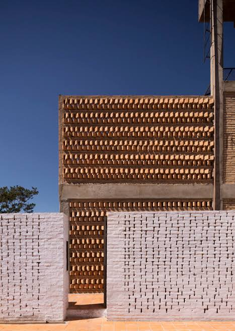
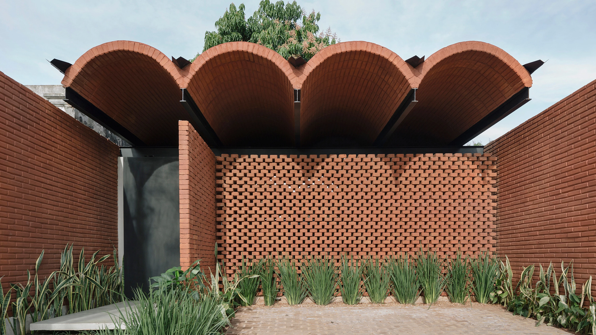

Diseño espacios que inspiran.
Arquitectura y diseño de interiores en Paraguay. Espacios sencillos, luminosos y pensados para quienes los habitan.
Proyectos

Créditos al autor
Créditos al autor
Sobre mí
Soy Sofía Aguayo Benítez, arquitecta. Diseño espacios sencillos, luminosos y pensados para las personas que los habitan.
Servicios
- Diseño de viviendas
- Remodelaciones
- Diseño de interiores
Contacto
¿Tienes un proyecto en mente? Escríbeme.